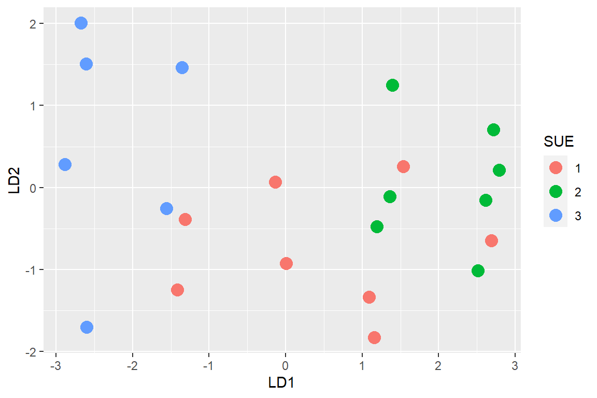

vezetes <- rio::import(file = "adat/manova_vezetesi_program.xlsx")
vezetes$SUE <- factor(vezetes$SUE)
str(vezetes)
#> 'data.frame': 30 obs. of 4 variables:
#> $ SUE : Factor w/ 3 levels "1","2","3": 1 1 1 1 1 1 1 1...
#> $ szelkot : num 4 4 5 5 3 3 3 5 3 5 ...
#> $ elegedett: num 1 3 4 1 2 2 4 2 1 1 ...
#> $ rendszer : num 2 1 2 4 4 3 2 3 4 2 ...
psych::headTail(vezetes)
#> SUE szelkot elegedett rendszer
#> 1 1 4 1 2
#> 2 1 4 3 1
#> 3 1 5 4 2
#> 4 1 5 1 4
#> ... <NA> ... ... ...
#> 27 3 1 1 5
#> 28 3 5 1 4
#> 29 3 5 1 5
#> 30 3 5 3 49 Többváltozós varianciaelemzés
9.1 Elméleti háttér
A MANOVA a többváltozós varianciaelemzés angol megfelelőjéből képzett betűszó (Multivariate ANOVA vagy Multivariate Analysis of Variance). A szokásos ANOVA kiterjesztésének tekinthető, ahol nem egy, hanem kettő vagy több függő változóval dolgozhatunk, de a cél ugyanaz: a független változó több csoportja közötti különbségek elemzése.
Felmerülhet bennünk, hogy ha több függő változónk van, akkor mindegyikre végezzünk el külön egy-egy hagyományos ANOVA-t, azonban ez az elsőfajú hiba emelkedéséhez vezet. A MANOVA olyan megoldást kínál, amivel több függő változó kombinált információi alapján képes kimutatni a csoportkülönbségeket.
Mivel a MANOVA egynél több függő változót használ, a null- és az ellenhipotézisek kissé megváltoznak:
- \(H_0\): A csoportok várható érték vektorai minden csoportban azonosak.
- \(H_1\): A csoportok várható érték vektorainak legalább egyike eltér egy másiktól.
9.2 Példa: Vezetési programok
Egy vállalat menedzsmentje szeretné megvizsgálni különböző vezetési programok hatását, ezért három különböző vezetési programot vezetett be három különböző stratégiai üzleti egységben (SÜE). Az első SÜE-ben bevezetett program az egyenlőséget és az individualizmust hangsúlyozta. A második SÜE-ben az egyenlőséget és a csoportmunkát helyzeték középpontba. A harmadik SÜE-ben a bevezetett program egy nagyon hierarchikus vezetési elvet alkalmazott. Később mindhárom SÜE dolgozóinak körében felmérést végeztek, és a kérdések között szerepelt a szervezettel való elkötelezettség mértéke (szelkot), a szervezettel való elégedettség nagysága (elegedett), illetve a rendszer egalitárius vagy tekintélyelvű (autokrata) jellege (rendszer). Vizsgáljuk meg, hogy a SÜE három csoportja azonosnak tekinthető-e a vizsgált 3 kérdésre (szelkot, elegedett és rendszer) adott válaszok tekintetében.
Mivel a MANOVA a három stratégiai üzleti egységben (SÜE) a kérdőívek pontszámainak (vagyis a függő változók) átlagainak különbségire kérdez rá, így készítsünk dobozdiagramot mindhárom csoportban
library(ggplot2)
p1 <- ggplot(vezetes, aes(x = SUE, y = szelkot, fill = SUE)) + geom_boxplot() +
theme(legend.position = "top")
p2 <- ggplot(vezetes, aes(x = SUE, y = elegedett, fill = SUE)) + geom_boxplot() +
theme(legend.position = "top")
p3 <- ggplot(vezetes, aes(x = SUE, y = rendszer, fill = SUE)) + geom_boxplot() +
theme(legend.position = "top")
gridExtra::grid.arrange(p1, p2, p3, nrow = 1)Úgy tűnik, hogy a mindhárom csoport eléggé különbözik egymástól.
Végezzük el az egyszempontos többváltozós variancia elemzést. A manova() függvény a formula= argumentumában a kettő vagy több numerikus függő változót és legalább egy független változót vár. A függő változókat most a cbind() függvénnyel fűztük egymás mellé, a független változónk pedig a 3 szintű kategorikus SUE.
man_1 <- manova(formula = cbind(szelkot, elegedett, rendszer) ~ SUE, data = vezetes)
summary(man_1)
#> Df Pillai approx F num Df den Df Pr(>F)
#> SUE 2 0.90947 7.2278 6 52 1.211e-05 ***
#> Residuals 27
#> ---
#> Signif. codes: 0 '***' 0.001 '**' 0.01 '*' 0.05 '.' 0.1 ' ' 1Alapértelmezés szerint a MANOVA az R-ben a Pillai-féle tesztstatisztikáit használja. A p-érték gyakorlatilag nulla, ami azt jelenti, hogy nyugodtan elvethetjük a nullhipotézist: legalább egy csoportátlagvektor eltér a többitől.
Használhat más teszteket is, mint például a Wilk-lambda, a Roy-féle vagy a Hotelling-Lawley statisztikákat, de a Pillai-féle a legrobusztosabb.
summary(man_1, test = "Wilks")
#> Df Wilks approx F num Df den Df Pr(>F)
#> SUE 2 0.1894 10.815 6 50 1.102e-07 ***
#> Residuals 27
#> ---
#> Signif. codes: 0 '***' 0.001 '**' 0.01 '*' 0.05 '.' 0.1 ' ' 1
summary(man_1, test = "Hotelling-Lawley")
#> Df Hotelling-Lawley approx F num Df den Df Pr(>F...
#> SUE 2 3.7577 15.031 6 48 1.375e-0...
#> Residuals 27 ...
#> ---
#> Signif. codes: 0 '***' 0.001 '**' 0.01 '*' 0.05 '.' 0.1 ' ' 1
summary(man_1, test = "Roy")
#> Df Roy approx F num Df den Df Pr(>F)
#> SUE 2 3.6133 31.315 3 26 8.724e-09 ***
#> Residuals 27
#> ---
#> Signif. codes: 0 '***' 0.001 '**' 0.01 '*' 0.05 '.' 0.1 ' ' 1A hatásnagyság kiszámítására MANOVA esetében a parciális Eta négyzet \((\eta_p^2)\) mutatót használhatjuk. Azt méri, hogy a független változó milyen hatással van a függő változókra. Ha az érték 0,14 vagy nagyobb, akkor azt mondhatjuk, hogy a hatás mérete nagy. Ez most 0,45, ami azt jelenti, hogy a hatás mérete nagy.
effectsize::eta_squared(man_1, partial = T)
#> # Effect Size for ANOVA (Type I)
#>
#> Parameter | Eta2 (partial) | 95% CI
#> -----------------------------------------
#> SUE | 0.45 | [0.24, 1.00]
#>
#> - One-sided CIs: upper bound fixed at [1.00].
effectsize::interpret_eta_squared(0.45, partial = T)
#> [1] "large"
#> (Rules: field2013)Mivel a MANOVA szignifikáns lett, további kérdés, hogy melyik csoport átlagvektora különbözik a többitől? Post-hoc tesztet kell végeznünk, amely esetünkben a lineáris diszkriminancia elemzés és az egyváltozós ANOVA lesz.
9.3 Post-hoc teszt: LDA
A lineáris diszkriminancia elemzés (LDA) célja, hogy változók olyan lineáris kombinációját találja meg, amely a legjobban elválaszt két vagy több csoportot. Ezáltal képesek leszünk egy olyan pontdiagramot megjeleníteni, amely az X és Y tengely két lineáris diszkriminánst jeleníti meg, a pontokat pedig a független változónak (SUE) megfelelően fogjuk színezni.
A lineáris diszkriminancia elemzést R-ben a {MASS} csomag lda() függvényével végzünk.
library(MASS)
lda_1 <- lda(SUE ~ szelkot + elegedett + rendszer, data = vezetes)
lda_1
#> Call:
#> lda(SUE ~ szelkot + elegedett + rendszer, data = vezetes)
#>
#> Prior probabilities of groups:
#> 1 2 3
#> 0.3333333 0.3333333 0.3333333
#>
#> Group means:
#> szelkot elegedett rendszer
#> 1 4.0 2.1 2.7
#> 2 4.7 3.4 1.5
#> 3 4.1 1.6 4.7
#>
#> Coefficients of linear discriminants:
#> LD1 LD2
#> szelkot -0.07056752 0.4959142
#> elegedett 0.10193972 0.8596451
#> rendszer -1.32360357 0.5392379
#>
#> Proportion of trace:
#> LD1 LD2
#> 0.9616 0.0384
# klaR::greedy.wilks(vasarlas~ertek+attitud+fizetes+kor,data=bio,
# niveau = 0.15)A fenti együtthatókból megtudhatjuk hogyan használják fel a függő változókat az LDA döntési szabályának kialakítására. Az LD1 a következőképpen számítható ki:
A vezetes adatmátrix numerikus változóira magunk is kiszámolhatjuk az LD1 és LDA2 értékét a predict() függvénnyel:
lda_1_pred <- predict(lda_1, method = "plug-in")
psych::headTail(lda_1_pred$x)
#> LD1 LD2
#> 1 1.16 -1.83
#> 2 2.69 -0.65
#> 3 1.39 1.25
#> 4 -1.56 -0.25
#> ... ... ...
#> 27 -2.6 -1.7
#> 28 -1.56 -0.25
#> 29 -2.88 0.29
#> 30 -1.35 1.47A post-hoc teszt utolsó lépése a fenti a pontdiagram megjelenítése. Ideális esetben egy vagy több csoport kiemelkedik:
d <- data.frame(lda_1_pred$x, SUE = vezetes$SUE)
psych::headTail(d)
#> LD1 LD2 SUE
#> 1 1.16 -1.83 1
#> 2 2.69 -0.65 1
#> 3 1.39 1.25 1
#> 4 -1.56 -0.25 1
#> ... ... ... <NA>
#> 27 -2.6 -1.7 3
#> 28 -1.56 -0.25 3
#> 29 -2.88 0.29 3
#> 30 -1.35 1.47 3ggplot(d, aes(x = LD1, y = LD2, colour = SUE)) + geom_point(size = 4)
A képen látható, hogy a harmadik SÜE csoport eltér mindkét másik csoporttól, míg a az első két csoport eltérése egymástól nem mondható markánsnak. Könnyen elképzelhető, hogy a SÜE harmadik csoportja volt a legnagyobb hatással a nullhipotézis elutasítására.
9.4 Post-hoc test: egyváltozós vizsgálatok
A statisztikailag szignifikáns egyszempontos MANOVA után az egyváltozós egyszempontos ANOVA-val is vizsgálódhatunk, amely minden függő változót külön-külön vizsgál. A cél az, hogy azonosítsuk azokat a konkrét függő változókat, amelyek hozzájárultak a jelentős globális hatáshoz. A klasszikus ANOVA mellett a Welch-féle változat és a Kruskal–Wallis-próba is használható, a feltételek egyre nagyobb csorbulása esetén. Most a nemparaméteres Kruskal–Wallis-próbát használjuk.
kruskal.test(szelkot ~ SUE, data = vezetes)$p.value
#> [1] 0.2499069
kruskal.test(elegedett ~ SUE, data = vezetes)$p.value
#> [1] 0.003003241
kruskal.test(rendszer ~ SUE, data = vezetes)$p.value
#> [1] 1.690362e-05Látjuk, hogy az elegedett és a rendszer függő változókban nem egyeznek a várható értékek a SÜE egyes csoportjaiban. Megjegyezzük, hogy mivel 3 függő változónk van, a Bonferroni-féle többszörös tesztelési korrekciót alkalmaznunk kell, vagyis a statisztikai szignifikancia szintet csökkenteni kell. Ez úgy történik, hogy a klasszikus alfa szintet (0,05) elosztjuk a tesztek (vagy függő változók, itt 3) számával. Ez p < 0,017-es szignifikancia elfogadási kritériumhoz vezet. A fenti próbák szignifikáns voltán ez most nem változtat.
A statisztikailag szignifikáns egyváltozós ANOVA-t (esetünkben Kruskal–Wallis-próbát) többszörös páronkénti összehasonlítás követi annak meghatározására, hogy mely csoportok különböznek egymástól. Most a Kruskal–Wallis-próba szokásos utóvizsgálatát a Dunn-próbát fogjuk használni.
library(DescTools)
DunnTest(formula = szelkot ~ SUE, data = vezetes, method = "holm")
#>
#> Dunn's test of multiple comparisons using rank sums : holm
#>
#> mean.rank.diff pval
#> 2-1 5.6 0.3179
#> 3-1 4.0 0.4964
#> 3-2 -1.6 0.6442
#> ---
#> Signif. codes: 0 '***' 0.001 '**' 0.01 '*' 0.05 '.' 0.1 ' ' 1
DunnTest(formula = elegedett ~ SUE, data = vezetes, method = "holm")
#>
#> Dunn's test of multiple comparisons using rank sums : holm
#>
#> mean.rank.diff pval
#> 2-1 8.75 0.0410 *
#> 3-1 -3.80 0.3143
#> 3-2 -12.55 0.0027 **
#> ---
#> Signif. codes: 0 '***' 0.001 '**' 0.01 '*' 0.05 '.' 0.1 ' ' 1
DunnTest(formula = rendszer ~ SUE, data = vezetes, method = "holm")
#>
#> Dunn's test of multiple comparisons using rank sums : holm
#>
#> mean.rank.diff pval
#> 2-1 -6.95 0.0694 .
#> 3-1 10.85 0.0092 **
#> 3-2 17.80 9.9e-06 ***
#> ---
#> Signif. codes: 0 '***' 0.001 '**' 0.01 '*' 0.05 '.' 0.1 ' ' 1A fenti utóvizsgálatok világossá teszik, hogy a harmadik SÜE csoport a rendszer változó esetén mindkét másik csoporttól, az elegedett változó esetén pedig a második csoporttól szignifikánsan eltér. Legjelentősebb mértékben tehűt a harmadik csoport különül el a másik két csoporttól, tehát ez okozza a MANOVA nullhipotézisének elvetését.
9.5 Elemzés jamovi-ban
A fenti elemzés jamovi-ban is elvégezhető az ANOVA / MANCOVA menüpontok kiválasztásával.
9.6 Alkalmazási feltételek vizsgálata
A MANOVA statisztikai próbának számos szigorú alkalmazási feltétele van. Néhány az ANOVA-ból jön, például a megfigyelések függetlensége vagy a variancia homogenitása, azonban vannak újdonságok is.
- Megfelelő mintanagyság. Ökölszabály: a mintaelemszám mindegyik független változó csoportban nagyobb az függő változók számánál.
summarytools::freq(vezetes$SUE, cumul = FALSE)
#> Frequencies
#> vezetes$SUE
#> Type: Factor
#>
#> Freq % Valid % Total
#> ----------- ------ --------- ---------
#> 1 10 33.33 33.33
#> 2 10 33.33 33.33
#> 3 10 33.33 33.33
#> <NA> 0 0.00
#> Total 30 100.00 100.00Látható, hogy a függő változók számát (3) minden csoport elemszáma (10) meghaladja.
A megfigyelések függetlensége. Minden személynek csak egy csoportba kell tartoznia. Az egyes csoportok megfigyelései között nincs kapcsolat. Az ismételt mérések nem megengedettek. A minta kiválasztásának teljesen véletlenszerűnek kell lennie.
Az egyváltozós vagy többváltozós kiugró értékek hiánya.
Az egydimenziós kiugró értékek dobozdiagramokkal is ellenőrizhetők, ezt korábban elvégeztük, láttuk csak egyetlen részcsoportban van kiugró értékek (a szelkot változó változó esetén a SÜE harmadik csoportjában). Használhatjuk a kényelmes rstatix::identify_outliers() függvényt is.
library(tidyverse)
vezetes %>%
group_by(SUE) %>%
rstatix::identify_outliers(szelkot)
#> # A tibble: 2 × 6
#> SUE szelkot elegedett rendszer is.outlier is.extreme
#> <fct> <dbl> <dbl> <dbl> <lgl> <lgl>
#> 1 3 1 1 5 TRUE TRUE
#> 2 3 1 1 5 TRUE TRUE
vezetes %>%
group_by(SUE) %>%
rstatix::identify_outliers(elegedett)
#> [1] SUE szelkot elegedett rendszer is.outlier
#> [6] is.extreme
#> <0 rows> (or 0-length row.names)
vezetes %>%
group_by(SUE) %>%
rstatix::identify_outliers(rendszer)
#> [1] SUE szelkot elegedett rendszer is.outlier
#> [6] is.extreme
#> <0 rows> (or 0-length row.names)A többváltozós kiugró értékek olyan adatpontok, amelyek szokatlan értékkombinációt tartalmaznak a kimeneti (vagy függő) változókon. A Mahalanobis távolságot általában a többváltozós kiugró értékek észlelésére használják. A távolság megmondja, milyen messze van egy megfigyelés a felhő középpontjától, figyelembe véve a felhő alakját (kovariancia) is. A rstatix::mahalanobis_distance() függvény könnyen használható a Mahalanobis-távolság kiszámítására és a többváltozós kiugró értékek megjelölésére. A Mahalanobis-távolságot csoportonként kell kiszámítani:
vezetes %>%
group_by(SUE) %>%
rstatix::mahalanobis_distance() %>%
filter(is.outlier == TRUE) %>%
as.data.frame()
#> [1] szelkot elegedett rendszer mahal.dist is.outlier
#> <0 rows> (or 0-length row.names)Látható, hogy nincs többváltozós kiugró érték az adatbázisban.
- Többváltozós normalitás.
A többváltozós normalitás Shapiro-Wilk tesztjének végrehajtása:
rstatix::mshapiro_test(vezetes[c("szelkot", "elegedett", "rendszer")])
#> # A tibble: 1 × 2
#> statistic p.value
#> <dbl> <dbl>
#> 1 0.772 0.0000214Látható, hogy ez az alkalmazási feltétel nem teljesül.
Az egyváltozós normalitásokat is érdemes lehet tesztelni:
# egyváltozós Shapiro–Wilk próba több csoportra
library(onewaytests)
nor.test(formula = szelkot ~ SUE, data = vezetes, method = "SW")
#>
#> Shapiro-Wilk Normality Test (alpha = 0.05)
#> --------------------------------------------------
#> data : szelkot and SUE
#>
#> Level Statistic p.value Normality
#> 1 1 0.7685823 6.009970e-03 Reject
#> 2 2 0.5941735 4.713464e-05 Reject
#> 3 3 0.5876023 3.936679e-05 Reject
#> --------------------------------------------------
nor.test(formula = elegedett ~ SUE, data = vezetes, method = "SW")
#>
#> Shapiro-Wilk Normality Test (alpha = 0.05)
#> --------------------------------------------------
#> data : elegedett and SUE
#>
#> Level Statistic p.value Normality
#> 1 1 0.8236140 2.802300e-02 Reject
#> 2 2 0.7172415 1.425861e-03 Reject
#> 3 3 0.5941735 4.713464e-05 Reject
#> --------------------------------------------------
nor.test(formula = rendszer ~ SUE, data = vezetes, method = "SW")
#>
#> Shapiro-Wilk Normality Test (alpha = 0.05)
#> --------------------------------------------------
#> data : rendszer and SUE
#>
#> Level Statistic p.value Normality
#> 1 1 0.8737456 1.105101e-01 Not reject
#> 2 2 0.6552710 2.539627e-04 Reject
#> 3 3 0.5941735 4.713464e-05 Reject
#> --------------------------------------------------- A multikollinearitás hiánya. A függő (eredmény) változók nem korrelálhatnak túlságosan egymással. Egyetlen korreláció sem lehet r = 0,90 feletti.
Ideális esetben az eredményváltozók közötti korreláció mérsékelt, nem túl magas. A 0,9 feletti korreláció a multikollinearitást jelzi, ami a MANOVA esetében problematikus. Másrészt, ha a korreláció túl alacsony, fontolóra kell vennie külön egyszempontos ANOVA futtatását minden függő változóra.
Számítsuk ki a páronkénti Pearson-korrelációs együtthatókat a függő változók között.
cor(vezetes[c("szelkot", "elegedett", "rendszer")])
#> szelkot elegedett rendszer
#> szelkot 1.0000000 0.1954881 -0.2528624
#> elegedett 0.1954881 1.0000000 -0.6129079
#> rendszer -0.2528624 -0.6129079 1.0000000Látható, hogy a korrelációs együtthatók nem támogatják a multikollinearitás tényét.
- Linearitás az összes függő változó között minden csoportban.
Mivel a függő változók közötti páronkénti kapcsolatnak lineárisnak kell lennie minden csoport esetében, ezért érdemes ezt a feltételt vizuálisan ellenőrizni. A {GGally} csomag ggpairs() függvényét használhatjuk.
library(GGally)
res <- vezetes %>%
select(SUE, szelkot, elegedett, rendszer) %>%
group_by(SUE) %>%
rstatix::doo(~ggpairs(.) + theme_bw(), result = "plots")
res$plots
#> [[1]]
#>
#> [[2]]
#>
#> [[3]]A fenti ábrák megkérdőjelezik a páronkénti lineáris kapcsolatok létezését.
- A varianciák homogenitása. A Levene-próba használható a csoportok közötti varianciák egyenlőségének tesztelésére. A Levene-próba nem szignifikáns értékei a varianciák homogenitását támogatják.
Az egyszempontos MANOVA mindegyik függő változó esetében azt feltételezi, hogy a csoportok között egyenlők a varianciák.
DescTools::LeveneTest(szelkot ~ SUE, data = vezetes)
#> Levene's Test for Homogeneity of Variance (center = median)
#> Df F value Pr(>F)
#> group 2 0.9755 0.3899
#> 27
DescTools::LeveneTest(elegedett ~ SUE, data = vezetes)
#> Levene's Test for Homogeneity of Variance (center = median)
#> Df F value Pr(>F)
#> group 2 0.4112 0.667
#> 27
DescTools::LeveneTest(rendszer ~ SUE, data = vezetes)
#> Levene's Test for Homogeneity of Variance (center = median)
#> Df F value Pr(>F)
#> group 2 5.6 0.009238 **
#> 27
#> ---
#> Signif. codes: 0 '***' 0.001 '**' 0.01 '*' 0.05 '.' 0.1 ' ' 1Látható, hogy a szóráshomogenitás a rendszer változó kivételével teljesül.
- Variancia-kovariancia mátrixok homogenitása. A BoxM-próba használható a csoportok közötti kovariancia egyenlőségének ellenőrzésére. Ez egyenértékű a variancia többváltozós homogenitásával. Ez a teszt rendkívül érzékenynek tekinthető. Ezért ennek a tesztnek a szignifikanciáját alfa = 0,001 értéknél határozzuk meg. A
{biotools}csomag megvalósítottboxM()függvényét használhatjuk.
biotools::boxM(data = vezetes[c("szelkot", "elegedett", "rendszer")], grouping = vezetes$SUE)
#>
#> Box's M-test for Homogeneity of Covariance Matrices
#>
#> data: vezetes[c("szelkot", "elegedett", "rendszer")]
#> Chi-Sq (approx.) = 19.607, df = 12, p-value = 0.0749A teszt statisztikailag nem szignifikáns (azaz p > 0,001), tehát az adatok nem sértették meg a variancia-kovariancia mátrixok homogenitásának feltételezését.
Kiegyensúlyozott a csoportelemszámok esetén nem probléma a variancia-kovariancia mátrixok homogenitásának megsértése miatt, de kiegyensúlyozatlan kialakításnál már problémás lehet.